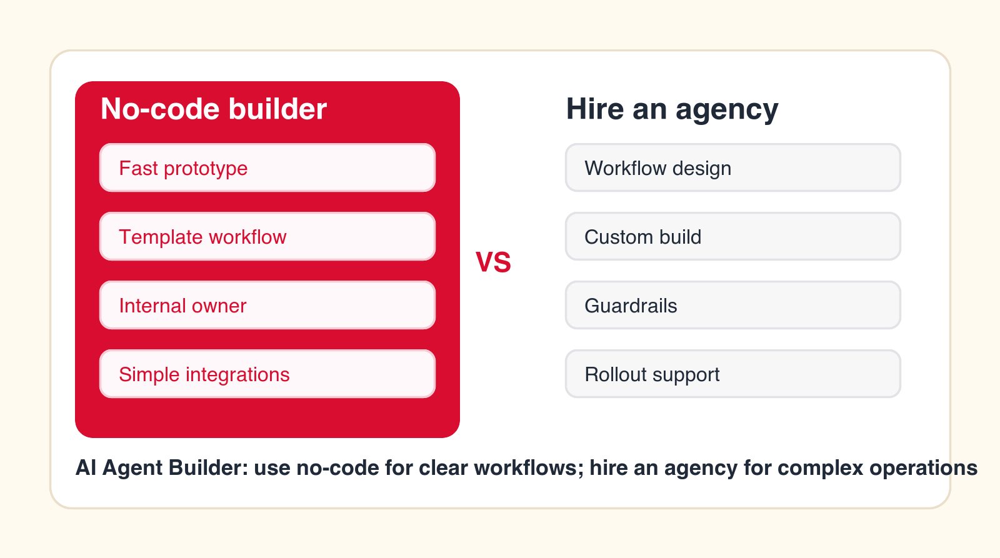
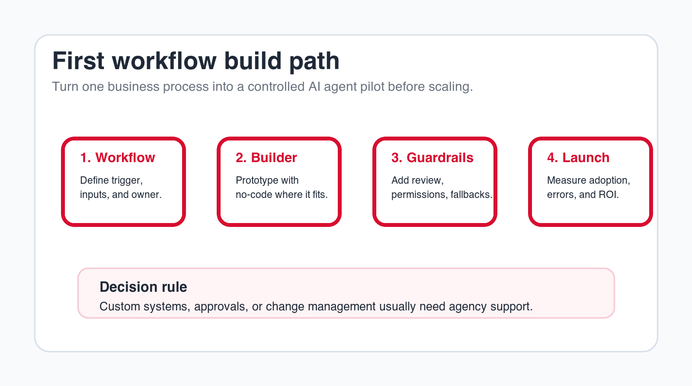
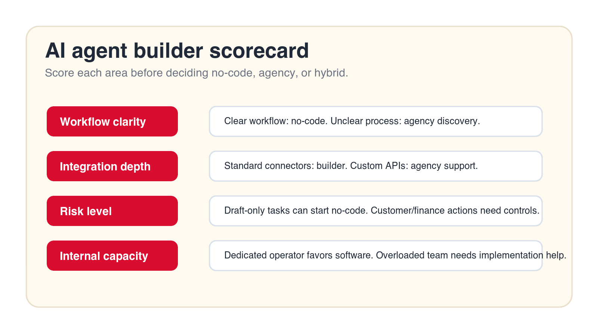

AI Agent Builder: When to Use No-Code and When to Hire an Agency
A no-code AI agent builder can help your team move fast when the workflow is clear. An agency becomes useful when the agent needs process design, custom integrations, guardrails, rollout support, or a path from prototype to production.

Best decision signal
Use no-code for a contained workflow your team can own. Hire an agency when the workflow affects real systems, customers, approvals, or multiple teams.
Focus
AI agent builder
Best for
Tool and partner choice
What it compares
No-code, agency, and hybrid
Main service
AI Agent Development
TL;DR
Use a no-code AI agent builder when the process is already mapped, the task is low risk, the integrations are standard, and someone inside the company can own testing and maintenance. Hire an AI automation agency when the workflow needs discovery, custom integration, data cleanup, security review, human approval design, user training, or production support. Many companies should use both: no-code for speed and an agency for workflow design, implementation, and rollout.
An AI agent builder is attractive because it makes AI automation feel reachable. Instead of hiring a full engineering team, a business can open a visual builder, connect a few tools, write instructions, and create an agent that researches, drafts, classifies, routes, or updates work. For early experiments, that speed matters.
The problem is that a builder is not the same as a finished business workflow. A no-code AI agent builder can help create the agent, but it cannot automatically decide which process should be automated, which actions are safe, which data can be trusted, who approves the output, or how users will adopt the new way of working. Those decisions are where many AI agent projects fail.
This guide explains when no-code is the right path and when an AI automation agency is worth hiring. It is written for founders, operators, department leaders, and business owners who want practical AI agent development without turning a useful idea into a messy automation project.
Quick Answer: Use No-Code for Clear Workflows, Hire an Agency for Unclear or High-Stakes Workflows
If your team can write the process on one page, identify the trigger, name the systems involved, define the output, and agree on who reviews the result, a no-code builder may be enough. If the team is still debating what the process is, which data is correct, how approvals work, or what happens when the agent is wrong, hire an agency or at least run a structured discovery sprint before building.
The decision is less about whether no-code tools are good. Many are useful. The decision is whether the workflow is ready for automation. A clean workflow can use simple software. A messy workflow needs design before software. AI does not remove that rule; it makes the rule more important because AI agents can produce confident outputs even when the surrounding process is weak.
That is why the best buying process starts with the workflow, not the vendor category. Decide what the agent will do on Monday morning, what it will never do, and how a person will inspect the result. Once those answers are clear, the tool decision becomes much easier.
| Decision area | Use no-code AI agent builder | Hire an AI automation agency | Use both |
|---|---|---|---|
| Workflow clarity | Steps, inputs, outputs, and owners are known. | The process needs mapping before build. | Agency maps it, then builds in a selected platform. |
| Risk level | Drafting, research, routing, or internal assistance. | Customer, finance, legal, HR, or regulated actions. | No-code for draft work, agency for approvals and controls. |
| Integrations | Standard connectors and simple field updates. | Custom APIs, legacy systems, or fragile data. | Builder for orchestration, agency for custom connection work. |
| Ownership | Internal operator can test and maintain the agent. | No clear owner or limited implementation capacity. | Agency launches and trains internal owner. |
What an AI Agent Builder Actually Does
An AI agent builder is software that helps create agents without building all infrastructure from scratch. Depending on the tool, it may include a visual workflow canvas, prompt editor, model selection, tool connectors, memory, knowledge base search, scheduling, approvals, logs, and basic analytics. Some builders focus on internal assistants, while others focus on sales, support, operations, or workflow automation.
The strongest use case for an AI agent builder is speed. A team can test whether an agent can classify a support request, draft a sales follow-up, summarize a document, prepare account research, create a task, or pull answers from an internal knowledge base. That makes builders useful for prototypes, low-risk automations, and teams that already understand their process.
The limitation is that the builder is usually workflow-neutral. It can provide blocks, templates, and connectors, but it does not know your approval rules, customer promises, compliance boundaries, sales stages, support escalation policy, pricing exceptions, or internal politics. Those still need to be designed by people who understand the business.
What an AI Automation Agency Adds
An AI automation agency should add implementation judgment. That means choosing the right first workflow, documenting how it works today, designing the target process, selecting tools, building agents, connecting systems, testing real examples, creating human review, training users, and supporting the workflow after launch. The agency should turn the idea into a working operating process, not just a demo.
For example, a company might say it wants an AI agent for sales. A practical agency will narrow that into a real workflow: inbound demo request triage, enrichment, CRM lookup, fit scoring, meeting routing, reply drafting, owner assignment, and reporting. The difference matters. "Sales AI" is a vague ambition. A controlled lead triage agent is a buildable workflow.
The right agency should also be willing to use no-code software where it fits. Hiring an agency does not mean every system must be custom-coded. Often the best path is a hybrid build: use an AI agent builder for orchestration and use agency work for workflow design, custom integration, guardrails, and rollout.
Free builder fit check
Find out whether no-code is enough for your first AI agent.
Drop your email and we will send a first-pass recommendation on whether your workflow fits a no-code builder, agency implementation, or a hybrid model.
No spam. We use this to reply with the recommendation.
1. Use No-Code When the Workflow Is Already Clear
No-code AI agent builders work best when the workflow can be described clearly. The agent needs a trigger, such as a new form submission, support ticket, email, document, row, or scheduled task. It needs inputs, such as account data, customer text, a document, or a knowledge source. It needs allowed actions, such as drafting, tagging, routing, summarizing, or creating a task. It also needs a clear output that a human can accept, edit, or reject.
When those pieces are known, no-code can be practical. A marketing team can build an agent that turns webinar questions into follow-up topics. A support team can classify incoming tickets. A sales team can summarize call notes and suggest next steps. An operations team can extract fields from recurring documents for human review. These are not magic use cases; they are structured workflows with limited scope.
If the workflow is not clear, no-code often becomes a place where the team discovers confusion. The builder may make it easy to connect steps, but the business still has to decide what those steps should be. When nobody can agree on the process, the builder will not solve the disagreement.
2. Hire an Agency When the Process Needs Design
Many AI agent projects start too late in the thinking process and too early in the tool. A team opens a builder before it has answered basic questions: where does the work begin, who owns it, which systems are reliable, which decisions need judgment, and what should happen when the answer is uncertain? That is process design, not software configuration.
An agency can run discovery before build. Discovery should identify candidate workflows, score them by value and readiness, select one pilot, map the current process, and define a target workflow. The output should be specific enough for implementation: trigger, inputs, systems, data sensitivity, agent role, review rules, output, exception path, owner, and success metric.
This is valuable because AI automation amplifies process quality. A strong process becomes faster. A weak process becomes confusing at a higher speed. If the workflow crosses sales, support, finance, operations, or customer success, agency-led design can prevent a tool experiment from becoming another unsupported side project.
3. Use No-Code for Low-Risk Drafting, Research, and Routing Agents
The safest place to start with an AI agent builder is work where the agent prepares, drafts, organizes, or recommends rather than making final decisions. Examples include summarizing a meeting, drafting a follow-up email, researching an account, classifying a ticket, generating a checklist, extracting fields for review, tagging a CRM record, or routing a request to the right queue.
These workflows are useful because they remove repetitive preparation work while keeping people in control. The agent does not approve a refund, send a sensitive customer message, change a contract, or make a hiring decision. It gives a human a better starting point. That is usually the right first step for business AI agents.
No-code builders are especially strong for these tasks because the team can test quickly. You can feed the agent real examples, review the output, improve instructions, and decide whether the workflow is worth expanding. If the agent saves time and users trust it, you have evidence for the next stage. If it does not, you have learned without overbuilding.
4. Hire an Agency When the Agent Touches Customers, Money, Legal, HR, or Compliance
The moment an AI agent touches sensitive areas, the work changes. Customer communication, pricing, refunds, invoices, contracts, hiring, employee records, regulated data, and compliance evidence all require stronger controls. The question is not only whether the agent can do the task. The question is whether the business can explain, review, log, and correct the task when something goes wrong.
An agency can help define autonomy levels. Some actions should remain draft-only. Some can be automatic below a threshold. Some should require manager approval. Some should never be handled by an agent. The right design may let an agent prepare a refund recommendation but require a human to approve it, or draft a contract summary but never edit the contract of record.
This does not mean high-risk workflows are impossible. It means they need guardrails. Guardrails include source requirements, permissions, review queues, escalation rules, audit logs, fallback states, and reporting. If your first agent will affect customer trust or financial outcomes, agency support is usually safer than a purely self-service build.

5. Use No-Code When Standard Integrations Cover the Workflow
A no-code AI agent builder becomes much more useful when it already connects to the systems you use. If the workflow only needs standard actions in common tools, such as reading a form submission, checking a CRM record, creating a task, searching a document store, sending a draft email, or posting to a project management board, the builder may cover the job.
Standard integrations reduce implementation friction. They also make the workflow easier for a non-engineering owner to understand. The team can see what the agent reads, what it writes, and where each step happens. That transparency matters when the business needs to maintain the workflow later.
The warning sign is when a connector exists but does not match your real process. A CRM connector may support basic contacts but not your custom objects. A help desk connector may create tickets but not apply your escalation logic. A document connector may search files but not respect the permission model you need. Integration depth matters more than logo coverage.
6. Hire an Agency When Integrations Are Custom, Messy, or Business-Critical
Agency support becomes important when the agent needs to connect several systems, handle custom fields, work with internal databases, respect complicated permissions, or operate around fragile data quality. These are not just technical details. They determine whether the agent can be trusted.
A custom workflow might need to read a CRM, check payment status, inspect a contract folder, update a support system, notify a manager, and write a clean summary to a reporting table. A no-code builder may be part of that system, but someone still needs to define the data flow, handle missing values, prevent duplicate updates, log failures, and make the workflow observable.
An AI automation agency should look at the agent's read and write permissions before building. What data does it need? What should it never access? What fields can it update? What requires approval? What happens when an API fails? If those questions are not answered, the team may create an agent that works during a demo and breaks during real operations.
7. Compare Internal Capacity Before Choosing No-Code
No-code does not mean no owner. Someone still has to write instructions, configure the workflow, connect tools, test examples, review outputs, fix edge cases, train users, and maintain the agent. If the team does not have that person, the software may sit unused or remain stuck as a prototype.
A good internal owner is not necessarily a developer. It can be an operations manager, sales operations lead, support manager, or technical founder. The owner needs enough process understanding to know what good output looks like and enough patience to test real examples. They also need authority to change the workflow when the agent exposes problems.
If the company has that owner, no-code can be productive. If the team is already overloaded, hiring an agency can shorten the path to launch. The agency can carry the build while the internal owner provides business judgment. That balance is usually healthier than expecting a busy team to become AI automation builders overnight.
8. Use No-Code to Prototype Before Committing to a Bigger Build
One of the best uses of an AI agent builder is rapid validation. Before committing to a larger agency engagement or custom AI solution, the team can build a simple version of the agent and test whether the workflow has value. This is useful when the idea is promising but the business case is not proven.
A prototype should be narrow. It might summarize ten support tickets, draft five sales follow-ups, route a small batch of inbound leads, or extract fields from a sample set of invoices. The goal is not to impress everyone with a broad demo. The goal is to learn whether the agent can produce useful outputs in a controlled workflow.
The prototype should also generate evidence. How often did the output need editing? Which cases failed? Did users trust the result? Did it save time? Did the workflow expose data gaps? Those findings help decide whether no-code is enough, whether agency support is needed, or whether the idea should be dropped.
9. Hire an Agency When You Need Production-Ready AI Agent Development
A prototype is not a production workflow. Production requires reliability, monitoring, permissions, fallback paths, user training, and a clear support model. If an AI agent is going to become part of daily operations, the business must know who owns it, how it is measured, and how problems are handled.
Agency-led AI agent development can help bridge the gap between a promising builder prototype and an operational workflow. The agency can refine prompts, restructure steps, connect the right systems, add review points, test edge cases, document the workflow, and prepare users for launch. The best work happens when the agency does not hide complexity from the client; it makes the system understandable.
Production readiness also includes support after launch. Business rules change. System fields change. Users find edge cases. New risks appear. If the agent has no maintenance owner, it can drift out of alignment with the workflow. Agency support can cover that gap until the internal team is ready to own it.
Build the first agent carefully
Want a practical pilot instead of another demo?
We can help map one workflow, choose the right builder or custom path, create guardrails, and launch a controlled AI agent pilot.
We will reply with a practical first-workflow recommendation.
10. Do Not Build Without Guardrails
Guardrails are the rules around the agent. They define what the agent can read, what it can write, when it must ask for review, how it handles uncertainty, what sources it must use, and what it should never do. Guardrails are not a nice-to-have for business AI agents. They are the difference between useful automation and risky automation.
A no-code builder may include approval steps, logs, permissions, and testing tools. Those features are helpful, but the business still has to define the policy. A builder can provide the button for approval. It cannot decide which refund amount requires approval, which customer segments need special handling, or which sales messages should never be sent automatically.
Agency support is useful when guardrails need to reflect real business judgment. The agency can help define autonomy levels, create review queues, design fallback responses, document decision rules, and train users. The goal is not to slow the project down. The goal is to make sure the agent can be trusted enough to stay in production.
No-code does not remove responsibility. If the agent sends a weak message, updates the wrong field, or exposes information to the wrong user, the business still owns the workflow. Before launch, assign a real owner for approvals, logs, permissions, testing examples, and incident response. The builder gives the interface; ownership gives the agent a safe operating model.
11. Compare Total Cost, Not Just Builder Subscription
A no-code AI agent builder usually looks cheaper than hiring an agency. The monthly subscription may be easy to approve, and the team can begin experimenting quickly. But total cost includes internal time, discovery, configuration, testing, integrations, cleanup, training, maintenance, and failed attempts.
Agency work costs more upfront, but it can reduce wasted effort when the team lacks implementation capacity or when the workflow is not ready. The agency should not create endless strategy work. A practical engagement should produce a working pilot, useful documentation, and a clearer path for the next workflow.
The right comparison is cost to trusted deployment. If a no-code builder gets the agent into daily use within weeks, it may be the best investment. If the builder creates three months of experiments and no adopted workflow, the cheaper subscription was not actually cheaper. Measure value by deployed workflow, not by tool access.
12. The Best Path Is Often Hybrid: No-Code Builder Plus Agency Support
Many businesses do not need to choose one side. A hybrid model can be stronger than either option alone. The no-code builder provides speed, interface, connectors, and a place to manage the agent. The agency provides workflow design, AI consulting services, implementation, custom integration, guardrails, user training, and support.
This model works well when the company wants to move quickly but does not want to own every implementation detail on day one. The agency can build the first workflow inside the selected builder, adapt it to the business, and hand over the pattern. After that, the internal team may be able to build simpler agents on its own.
The hybrid model requires clear ownership. Decide who configures the builder, who approves workflow logic, who maintains integrations, who reviews agent performance, and who supports users. Without ownership, hybrid becomes finger-pointing. With ownership, hybrid becomes a practical path to scalable AI automation.

13. How to Evaluate an AI Agent Builder
Do not evaluate builders with generic demos. Bring one real workflow and ask the tool to support it. If the first workflow is support triage, test how the builder reads the ticket, identifies the customer, checks related history, classifies intent, drafts the internal note, routes the ticket, logs the action, and handles uncertainty. If the first workflow is sales follow-up, test how it reads meeting notes, checks CRM data, drafts the email, creates a task, and escalates missing information.
Look closely at testing and observability. Can you see every run? Can you inspect inputs and outputs? Can you replay failures? Can users correct results? Can the agent be limited to approved actions? Can permissions be narrowed? Can the system show when it is unsure? A builder that makes errors hard to see is not ready for important workflows.
Also check maintenance. Who can update prompts, change steps, edit connectors, review logs, and measure performance? A builder should help the business improve the agent over time. If every small change requires technical support, the tool may not be as self-service as it appears.
14. How to Evaluate an AI Automation Agency
Do not hire an agency just because it says it builds AI agents. Ask how it chooses the first workflow, how it scopes a pilot, how it handles data access, how it designs human review, how it tests outputs, how it measures success, and how it supports the workflow after launch. A serious agency should be specific before it asks you to commit to a broad build.
Good agency proposals usually include discovery, workflow map, pilot scope, systems involved, data requirements, risk controls, build plan, testing method, launch plan, handover, and support options. They should also explain what not to automate yet. If an agency promises fully autonomous agents across the business without understanding your process, that is a risk signal.
The best agency fit is practical. You want a partner that can use no-code tools where they help, build custom AI solutions where they are justified, and keep the business focused on measurable workflow improvement. The goal is not to have the fanciest AI stack. The goal is to remove real operational friction with controlled automation.
15. A 90-Day Plan for Your First AI Agent
In the first thirty days, choose the workflow. List candidate processes and score them by frequency, value, readiness, risk, and owner commitment. Pick one workflow that is repetitive enough to matter but safe enough to pilot. Write the brief: trigger, inputs, systems, agent role, allowed actions, review rules, exception path, owner, and metric.
In days thirty to sixty, build and test. If the workflow is clear and low risk, use a no-code AI agent builder. If the workflow needs custom integration, guardrails, or rollout planning, bring in agency support. Test real examples, not invented examples. Include normal cases, messy cases, missing data, duplicates, and edge cases.
In days sixty to ninety, launch with a small group. Measure adoption, output quality, time saved, review acceptance, failed runs, exception rate, and user feedback. Improve the workflow before expanding. Use the first pilot to create a repeatable pattern for future AI agents.
The Minimum Useful Pilot
A minimum useful pilot should be narrow enough to launch and useful enough to matter. It might classify tickets, draft sales follow-ups, prepare account research, summarize onboarding notes, extract invoice fields, or route internal requests. It should have one owner and one success metric.
What to Avoid in the First Pilot
Avoid workflows where the process is political, the data is unreliable, the risk is high, or the value cannot be measured. Also avoid broad assistants that promise to help everyone with everything. Broad assistants are hard to evaluate. Specific agents are easier to improve.
Questions to Answer Before Build
- What exact workflow will the agent support?
- Which systems will the agent read and update?
- Which outputs require human review?
- Who owns testing, launch, and maintenance?
- What result will prove the pilot worked?
Final Decision Checklist
- Use a no-code AI agent builder if the workflow is clear, low risk, and covered by standard connectors.
- Hire an agency if the workflow needs discovery, custom integration, data cleanup, guardrails, or rollout support.
- Use a hybrid model if you want builder speed but need agency implementation judgment.
- Do not automate a process nobody can describe clearly.
- Do not let an agent take sensitive actions before review rules are defined.
- Measure the first pilot before expanding to more workflows.
The right answer is the one that gets a trusted workflow into daily operation. If your team can build, test, launch, and maintain the agent, no-code may be enough. If the workflow is important and the path is unclear, hire an AI automation agency. If you need speed and support, combine both.
Start with one workflow. Keep the first agent narrow. Add human review where risk exists. Measure the result. Then use what you learn to decide whether future agents should be built internally, with an agency, or through a repeatable hybrid model.
Free AI agent builder review
Get a practical recommendation before choosing a builder.
Send your email and we will reply with a first-pass view of whether your workflow fits no-code, agency implementation, or a hybrid build.
No spam. We use this to reply with the recommendation.
FAQ: AI Agent Builder vs Agency
What is an AI agent builder?
An AI agent builder is software for creating AI agents that can follow instructions, use tools, access knowledge, run workflow steps, and produce outputs such as drafts, summaries, classifications, or task updates.
When is a no-code AI agent builder enough?
A no-code builder is usually enough when the workflow is clear, low risk, supported by standard integrations, and owned by someone inside the company who can test, launch, and maintain the agent.
When should I hire an AI automation agency?
Hire an agency when the workflow needs process design, custom integrations, data cleanup, security review, human approval rules, user training, production support, or a clear implementation roadmap.
Can an agency build inside a no-code AI agent builder?
Yes. A strong agency can use a no-code builder as the implementation platform when it fits, then add workflow design, guardrails, integrations, testing, documentation, and rollout support around it.
What should the first AI agent automate?
Start with a frequent, measurable, low-risk workflow such as lead routing, support triage, meeting follow-up, account research, invoice field extraction, CRM cleanup, or internal request routing.
About Bailey Roque
Bailey Roque writes for Go Expandia on AI automation, AI agent development, workflow design, AI consulting, and practical rollout models for business teams.
Related posts
Keep planning your AI agent stack
Comparison
AI Agent Platform vs AI Automation Agency
Compare platforms and agencies across workflow design, cost, integrations, and support.
Agentic guide
Agentic Workflows
See 15 business examples you can automate first with AI agents.
Service
AI Agent Development
Build controlled AI agents for business workflows, tools, and approvals.
Ready to Build the Right AI Agent?
Go Expandia helps companies choose the right workflow, select the right builder or agency path, and launch AI agents with practical guardrails.